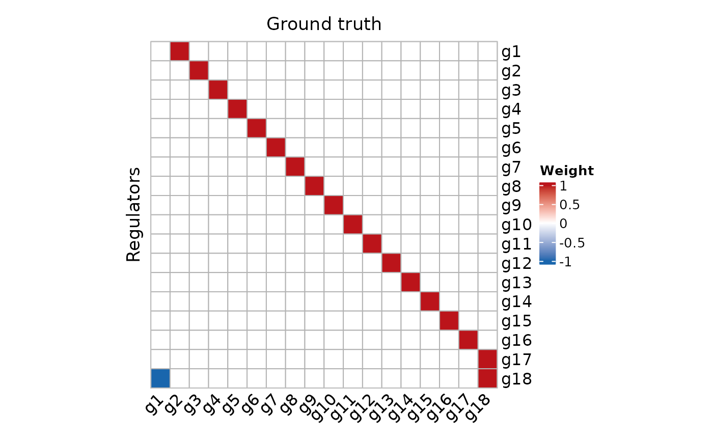
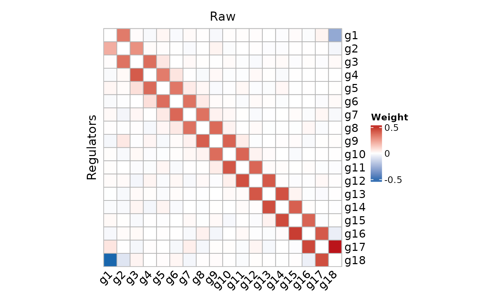
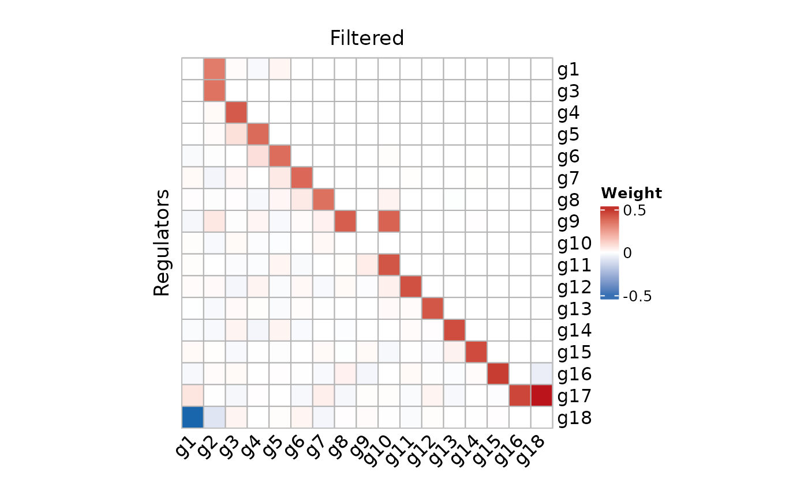
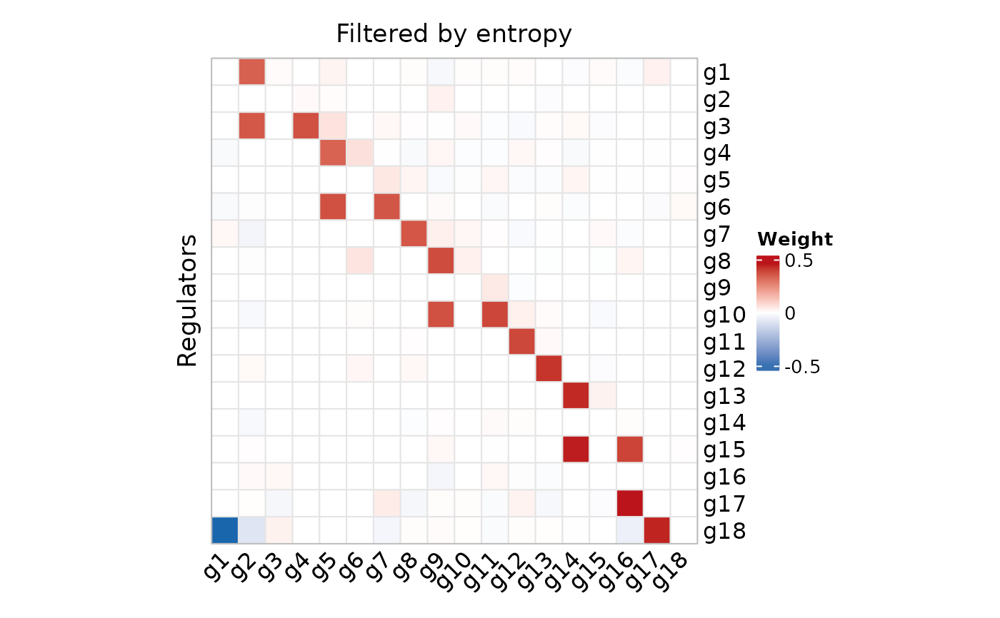
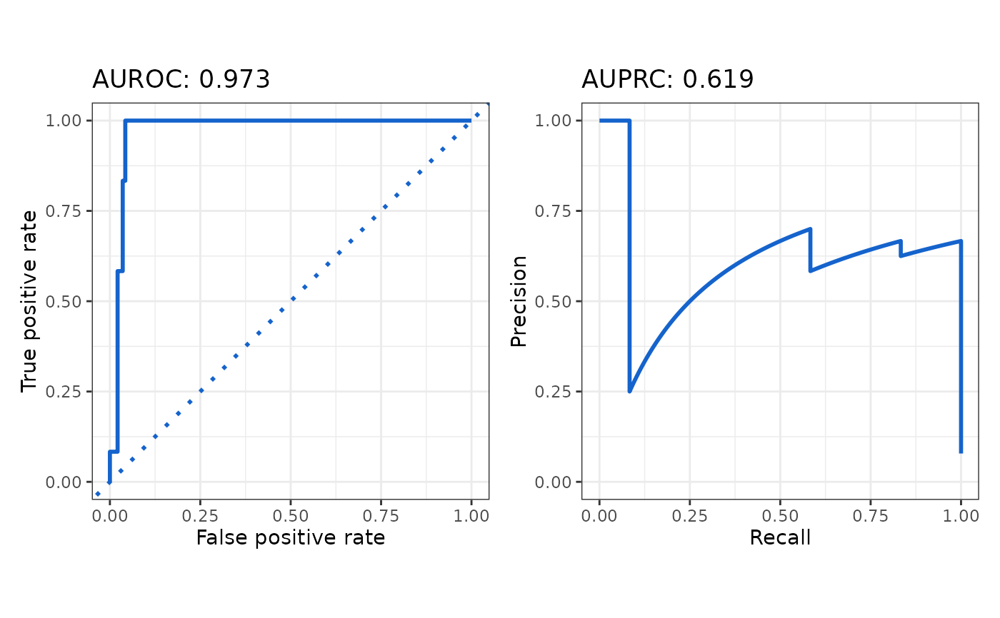
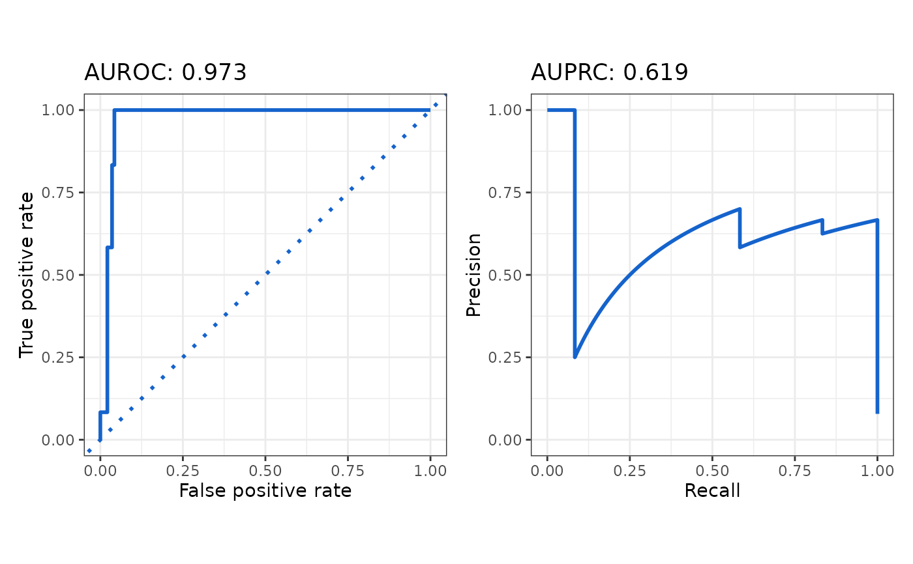

network_sift
network_sift(
network_table,
matrix = NULL,
meta_data = NULL,
pseudotime_column = NULL,
method = c("entropy", "max"),
entropy_method = c("Shannon", "Renyi"),
entropy_nboot = 0,
history_length = as.numeric(1),
entropy_p_value = 0.05,
cores = 1,
verbose = TRUE
)Arguments
- network_table
network_table
- matrix
The expression matrix.
- meta_data
The meta data for cells or samples.
- pseudotime_column
The column of pseudotime.
- method
method The method used for filter edges. Could be choose "entropy" or "max".
- entropy_method
If setting 'method' to "entropy", could be choose "Shannon" or "Renyi" to compute entropy.
- entropy_nboot
entropy_nboot
- history_length
history_length
- entropy_p_value
P value.
- cores
Number of CPU cores used. Setting to parallelize the computation with
foreach.- verbose
Print detailed information.
Value
Filtered network table
Examples
data("example_matrix")
data("example_ground_truth")
network_table <- inferCSN(example_matrix)
network_table_filtered <- network_sift(network_table)
#> Parameters: 'matrix', 'meta_data' and 'pseudotime_column' not all provide, setting 'method' to 'max'.
data("example_meta_data")
network_table_filtered_entropy <- network_sift(
network_table,
matrix = example_matrix,
meta_data = example_meta_data,
pseudotime_column = "pseudotime",
history_length = 2,
entropy_nboot = 0,
cores = 2
)
#> Using 2 cores.
network.heatmap(
example_ground_truth[, 1:3],
heatmap_title = "Ground truth",
show_names = TRUE,
rect_color = "gray90"
)

network.heatmap(
network_table,
heatmap_title = "Raw",
show_names = TRUE,
rect_color = "gray90"
)

network.heatmap(
network_table_filtered,
heatmap_title = "Filtered",
show_names = TRUE,
rect_color = "gray90"
)

network.heatmap(
network_table_filtered_entropy,
heatmap_title = "Filtered by entropy",
show_names = TRUE,
rect_color = "gray90"
)

auc.calculate(
network_table,
example_ground_truth,
plot = TRUE
)
 #> AUROC AUPRC
#> 1 0.963 0.495
auc.calculate(
network_table_filtered,
example_ground_truth,
plot = TRUE
)
#> AUROC AUPRC
#> 1 0.963 0.495
auc.calculate(
network_table_filtered,
example_ground_truth,
plot = TRUE
)
 #> AUROC AUPRC
#> 1 0.961 0.604
auc.calculate(
network_table_filtered_entropy,
example_ground_truth,
plot = TRUE
)

#> AUROC AUPRC
#> 1 0.973 0.619
#> AUROC AUPRC
#> 1 0.961 0.604
auc.calculate(
network_table_filtered_entropy,
example_ground_truth,
plot = TRUE
)

#> AUROC AUPRC
#> 1 0.973 0.619